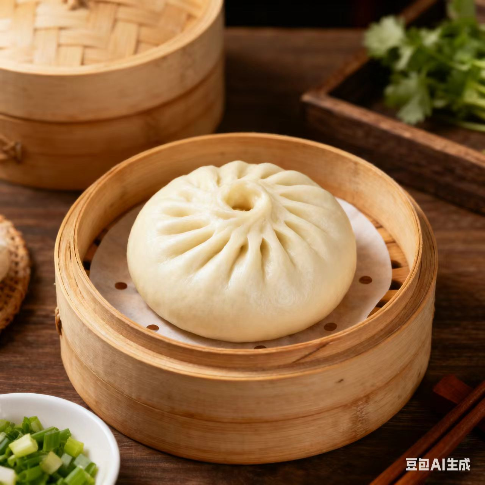
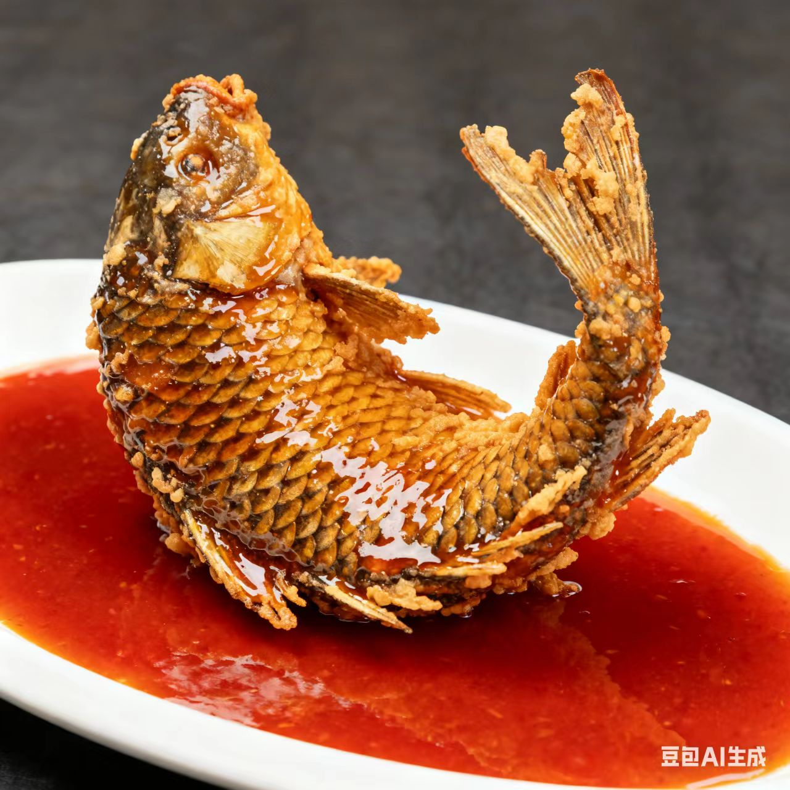
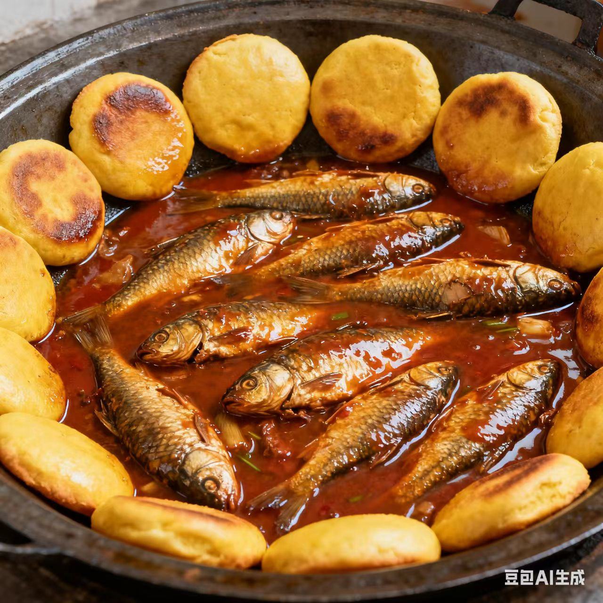

津菜 · jin Cuisine
码头文化的咸鲜与市井
一、起源与历史
发源于天津卫码头文化，明清时融合鲁菜与运河饮食，形成“咸鲜为主、重油重色”的风格，烹饪思想强调“接地气、够实在”
二、地理与气候影响
天津临海靠河，食材以河鲜、海鲜、面食为主；码头文化促使饮食“快捷、量大”，适配劳作需求
三、主要烹调技法
- 炒
- 爆
- 烧
- 扒
- 贴
每种技法对应味型，如贴菜的焦香味、熬菜的浓香味、爆菜的鲜咸味
四、代表菜肴
-
狗不理包子

-
罾蹦鲤鱼

-
贴饽饽熬小鱼

五、风味与审美
天津菜的特点是“咸鲜浓郁、市井烟火”，追求“精致与粗放结合”（如包子的细腻+熬小鱼的豪放），体现天津人“乐观务实”的生活态度
六、文化意象
天津菜是“码头文化的味觉符号”，从早餐锅巴菜到小吃麻花，体现了“接地气的生活情趣”
七、地方俗语
天津小吃三件宝，包子麻花锅巴菜
罾蹦鲤鱼味够鲜，吃完能唠一整天
拓展视野：视频
拓展视野：学术资料
| 研究论文 / 报告名称 | 链接 |
|---|---|
| 《鲁菜饮食文化的历史演变》 | 查看论文 |